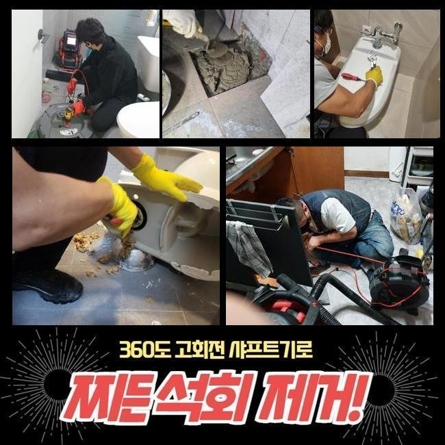
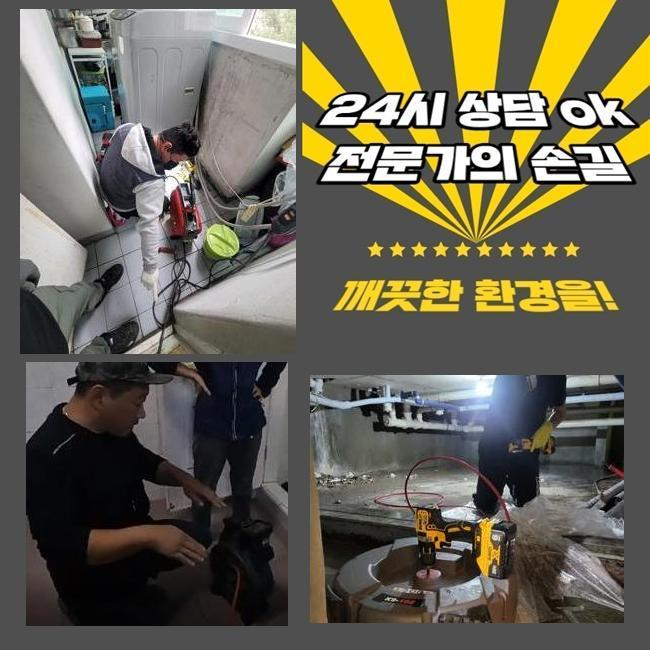
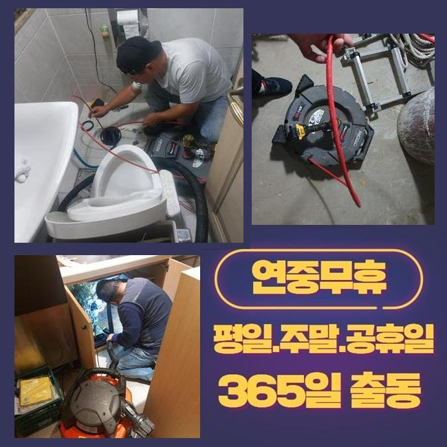
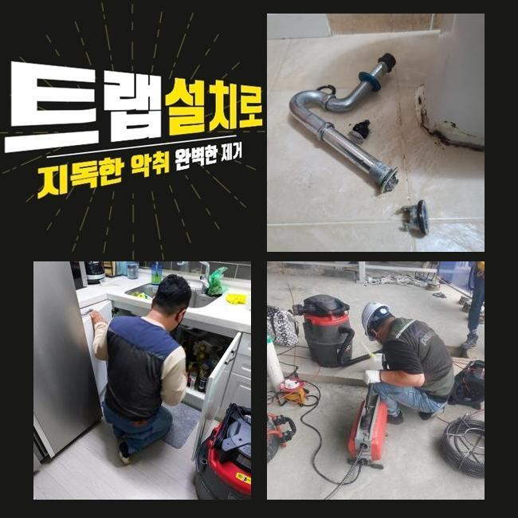
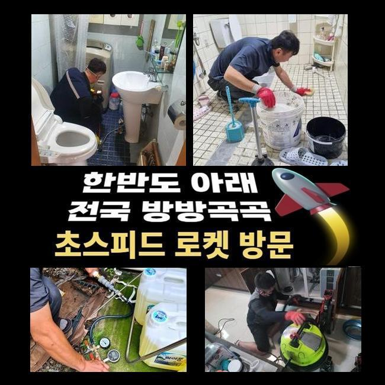
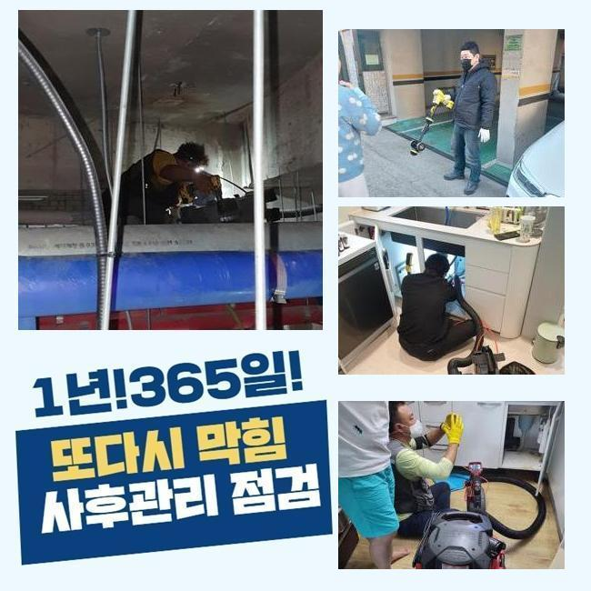
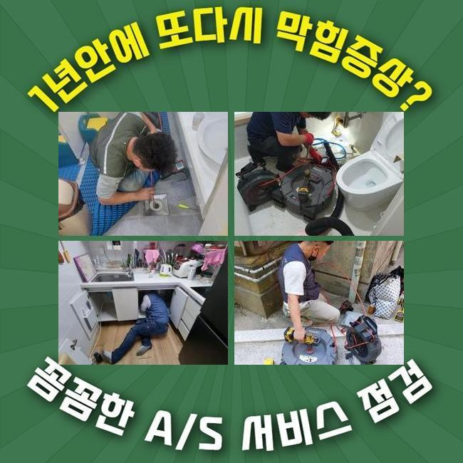

🏠 종로 훈정동싱크대배수구막힘 숭인동 악취차단 배관공사
용인 싱크대막힘 전문 시공 후기

📋 작업 개요
- 위치: 용인
- 서비스 유형: 싱크대막힘, 하수구막힘, 배관막힘, 누수수리, 배관청소, 고압세척, 설비공사, 배관보수, 악취차단
- 작업 일시: 2024. 12. 13. 4:06
- 업체명: 하수구수사대 (010-5615-2118)
🔍 문제 상황
종로 훈정동싱크대배수구막힘 숭인동 악취차단 배관공사
물이 안빠지는 문제들을 시정하려면 중요하게 작용하는것은 배수각 설비의 때에 맞춘 청소인데요
하수관에 잔여물질이 안내려가게 유의해주심과 동시에 스무스하게 빠질 수 있게끔 힘써주는게 우선이겠습니다
식당 등과 같이 보수공사 과정에서도 하수라인들을 진단해보고 오류들을 조정하는것이 우선이겠습니다
고객의 설명과 함께 주방라인에서 야기된 기름성분으로 막힘 해당 증상을 시정하려면 작업에 착수했죠
설거지 시 기름이 곧장 흘러 트렌치라인의 벽쪽에 쌓이게되었고 단단해지면서 여러 결함들이 생겨난 상황이었습니다
저희 전문진은 석션기기로 초입부분의 오수들을 청소한 뒤 단단해진 이물도 청소하고자 샤프트를 운용하여 하수도를 청소하였습니다
이러한 단계를 수행하여 잔해와 함께 악취등의 문제들은 수습했답니다
개수대에 하수와 찌꺼기를 청소하고 배수통에서부터 이어진 주름진 호스 내부와 바닥부근을 점검했으나 문제요소는 없는 상태였습니다
이에 따라 깊숙한 지점까지 살피고자 내시경을 사용했죠

🔎 원인 분석
💡 전문가 진단: 정밀 진단 장비를 사용하여 슬러지의 고착 여부를 판명하고 타격/세척 작업을 실시했습니다.
내시경장치로 체크해보았더니 입구라인엔 문제들이 있는 상태는 아니였지만 2m 이하 부근 벽면에 기름성분이 보여졌는데요
지속적으로 점검하였더니 수직배관 라인에서 바닥 배수구를 막고 있는 오염물들을 보았죠
슬러지뭉치가 배수공간을 협소하게 해 증세들이 발발한 것으로 판단됐습니다
그 다음으로는 이물의 양상에 따른 해결방법을 모색해야했죠
오염원이 고착화를 거쳐 바닥 배수구를 막는 상태에서 샤프트기기를 운용시켜 단단해진 이물들을 타격하여 세척을 이행했죠
덧붙여 4미터 부분에서는 노커의 회전력을 써서 기름때들을 탈락시킨 뒤 제거시켰는데요
주변에서 구매가능한 통상적인 간단하게 해결하는데 적합한 장비들론 난항이 예상되었기에 전문적인 장치가 수반될 필요가 있는 작업들로 이상없이 진행됐고 깊은 부분까지 오차없이 수습하기에 이르렀죠
이처럼 하수관의 신속한 흐름들이 복구되어 배수시설들의 기능들을 지킬 수 있었습니다
싱크대 라인의 오류들을 얼추 마무리하고 바깥부분도 확인해야했습니다
외부라인의 하수구도 상당량의 잔해물질들이 잔뜩이라 작업이 쉽지 않았죠

🔧 작업 과정
물들을 배출시켜서 하수도를 흡입한 후 이물들을 석쎤장치로 제거했죠
내시경기기로 구간 별로 확인하니 흡착이 심각해보였죠
해당 문제는 출수구로 향하는 흐름들을 막아서기에 내부적으로 균열을 앞당기게 되는데요
하수도에 누수증세가 발현되거나 내구성 측면이 훼손되면 교체도 고려해야합니다
의뢰인에게도 통상적인 기기가 아닌 고압세척기기의 이용을 권유함과 동시에 고압세척과 관련한 계획들을 설명드리기에 이르렀죠
의뢰인분도 관로의 컨디션을 가볍지 않게 받아들이시고는 고수압의 방식으로 문제를 타개하기를 희망하셔서 고수압의 방식을 실시키로 결정했죠
외부 관로 속을 청소하여 기름때를 청소해주어야 했어요
물빠짐이 느려진것은 하수도에 증세들이 있을 수 있으므로 점검이 수반되어야하죠
작업 진행 중 나타난 폐기물들은 제거가 필요하고 잔여물질이 하수도로 마구잡이로 흐를 수 없도록 주의하는게 좋은데요
이후에 고압수청소 장비를 써서 굳게된 잔해들과 슬러지들을 제거시켰죠
심각성이 두드러졌던 막힘이였기에 어려운 과정이였지만 큰 문제없이 수월히 진행된 덕에 소요시간까지 줄였는데요
고압수청소들을 마치고서 확인절차를 위한 내시경기기로 놓친 잔존 이물들이 있는지 체크도 깨끗히 이어갔습니다
해당 결함을 피하려면 시시때때로 관리를 해야하겠습니다
향후를 생각해서라도 예방에 덧붙여 신경 써야 합니다
해당 사안들을 신경쓰신다면 추후 하수관의 안전성을 지켜내는 것이 가능합니다
끝으로 샤프트장치를 쓰고서 잔여물 등 더러워진 상태들도 마무리했어요


✅ 작업 완료
하수관이 막힌 가운데 혼자서 시정하기위하여 안전한 방법들을 찾아보시는 방안도 도움이 될 수 있어요
허나 금일의 증상처럼 영업장등에서 간소하게 해결할 수 없다면 전문업체를 찾아 의뢰하는걸 권해드립니다
배수 정체는 때에 맞는 조치들을 미루면 부차적 문제도 감당해야합니다
이에 따라 빠르고 효과좋은 대응이 필요해요
통수가 안된다라면 연락주세요! 안정성을 바탕으로 의뢰인의 불편을 잠재우겠습니다




⚠️ 베란다 누수 및 방수 관리 방법
- ✅ 비가 많이 올 때 창틀 주변이나 아래층 천장에 얼룩이 생기는지 정기적으로 확인해 보세요.
- ✅ 우수관 주변 실리콘 마감이 들뜨거나 깨진 틈새가 있는지 손상 여부를 수시로 체크하세요.
- ✅ 베란다 바닥 타일의 줄눈(메지)이 소실되면 그 틈으로 물이 침투하여 누수가 유발됩니다.
- ✅ 누수 의심 증상 발견 시 방치하면 아래층 손실이 커지므로 즉시 전문가의 진단을 받으십시오.
💡 핵심 정리
- 확실한 장비 작업(내시경 점검 및 샤프트 스케일링)으로 원인을 뿌리 뽑습니다.
- 작업 후 1년 이내에 동일한 부위 재발 시 100% 무상 A/S 서비스를 보장합니다.
- 서울 · 경기 · 인천 전 지역에 24시간 언제든 긴급 출동할 수 있도록 항시 대기 중입니다.
❓ 자주 묻는 질문 (FAQ)
🚨 용인 싱크대막힘 문제로 고민이신가요?
정확한 원인 진단과 확실한 시공으로 재발 없는 해결을 약속드립니다.
24시간 긴급 출동 | 서울 · 경기 · 인천 전지역 | 1년 내 재발 시 무상 A/S